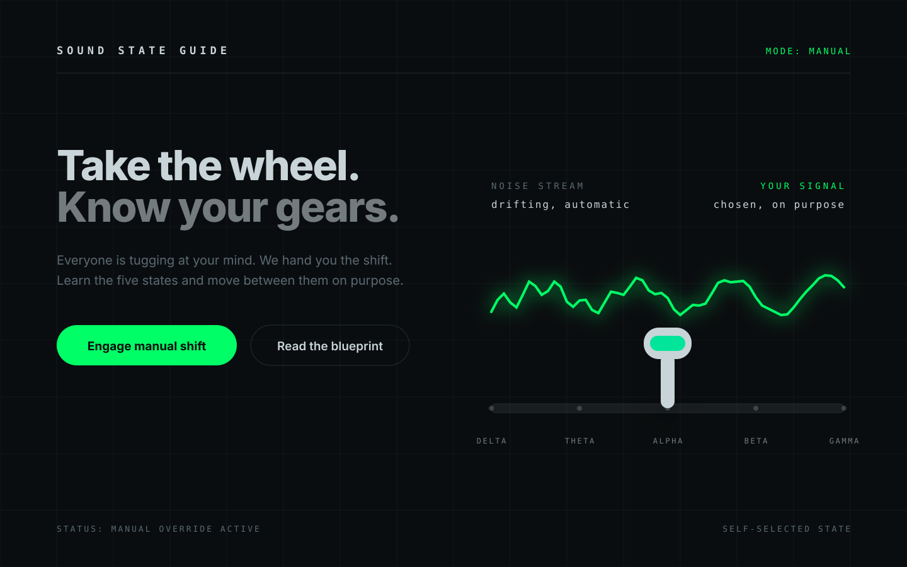
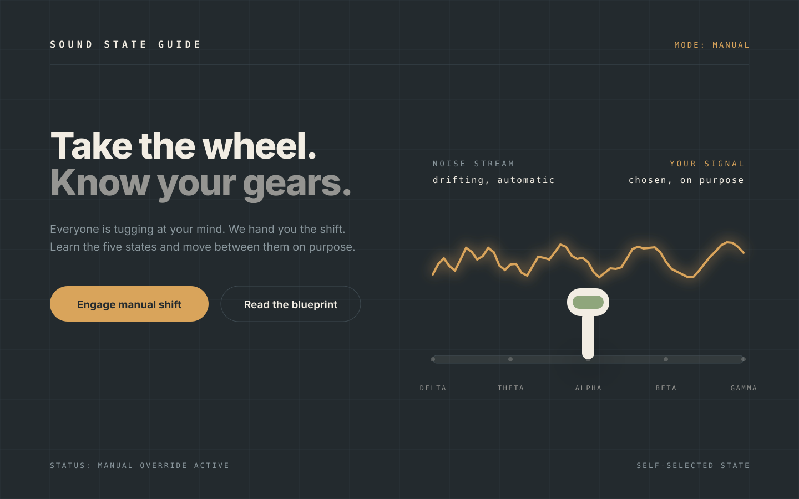
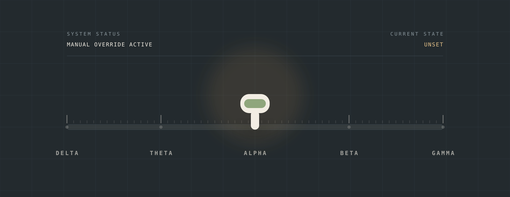
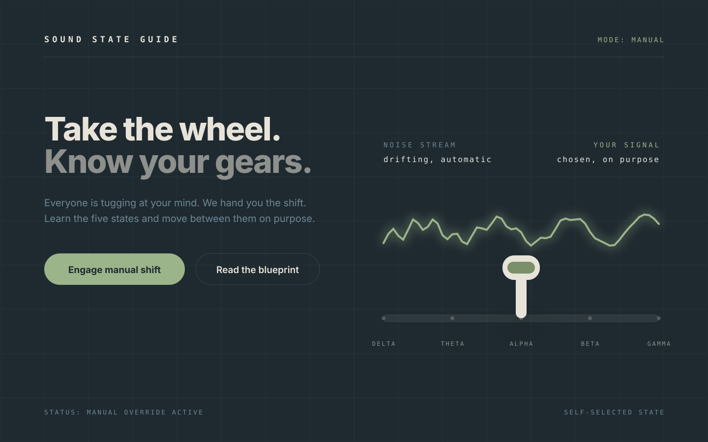
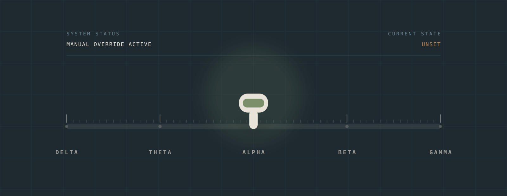
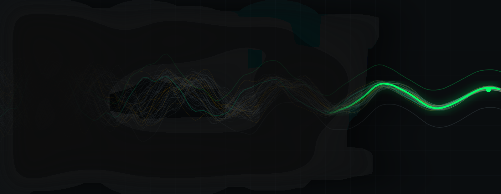
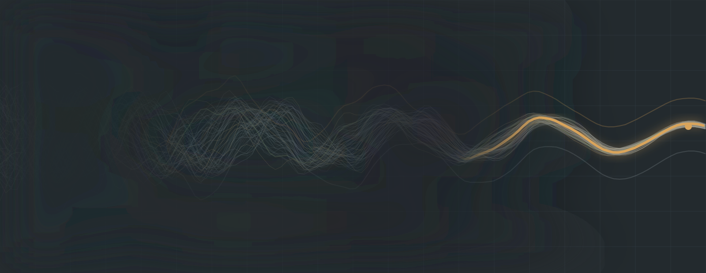
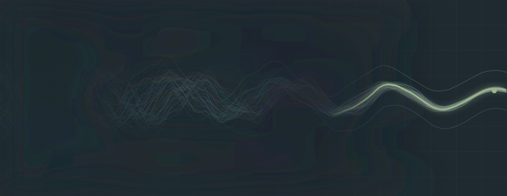

Working surface, round 2
Three temperatures
Same drawing, same layout, three finishes. The console idea is settled. The only open question is how hot the surface runs.
Draft. noindex, not linked from the site, nothing here is live copy. Every plate uses the same geometry, so the palette is the only variable.
What I took from Gemini, and what I left
Its structure is right and I have used it. Its costume is the part I would not ship, and the reason is specific rather than taste.
| Idea | Call | Why |
|---|---|---|
| Noise stream vs. driver's cockpit | Keep | It is the same conclusion the first round reached independently. Two routes landing on the console is a good sign. |
| Gear positions as the site's navigation | Keep | The site already talks about gears and shifting. This turns that language into structure instead of decoration. |
| Noise dissolving into a clean signal, on interaction | Keep | That is plate A made live. It is the one animation that would earn its cost. |
| A HUD status line | Keep, as a label | "MODE: MANUAL" states a setting. "TARGET: 0.5 to 4.0 Hz" states an outcome, and the site does not promise outcomes. |
| Obsidian plus phosphor green plus grid plus monospace everything | Drop | It is the default look of every AI product page right now, and it raises arousal. The job here is to lower it. |
| The Matrix frame itself | Drop | It is a borrowed mythology, and it is the lone operator in the dark. You asked for "you are not alone." Those are different stories. |
| Gear 4 and 5 as Bio-Tuning and practitioner certification | Drop | Those are CNR's products, sold through a $10,100 registry. In your nav they would imply you sell training. You do not. |
| Photoreal AI cockpit renders | Drop | Machine-made images carry no copyright, and "8k photorealistic industrial" is the exact texture that reads machine-made. |
A. Matrix temperature
Obsidian, phosphor green, amber, grid. The version as described.

Honest read
- It has more punch than the other two. The call to action genuinely jumps, and I am not going to pretend otherwise.
- The green glow bleeds. The waveform halo goes soft and the line loses its edge.
- Green on black with a grid is the visual signature of a startup landing page. It reads energetic and slightly aggressive, which is the opposite of what someone looking for sleep or calm is shopping for.
B. Brass temperature
Deep neutral dark, brass as the live element, cream controls, sage as the secondary. A real instrument rather than a screen.


What it does
- Keeps the console authority and loses the sci-fi costume. It reads like a piece of equipment you own, not a screen you are being sold on.
- Brass and cream are already the temperature of the site's cream ground and sage accent, so this is a dark room in the same house.
- Amber is doing double duty: it is the live signal and it is the honest caution color for the automatic-drift side.
- Holds up as flat vector. No glow dependence, so it survives a cheap phone screen in daylight.
C. Sage temperature
The site's own accent on a warm slate dark. The conservative option.


Honest read
- The most continuous with what is already built. Nothing on the site would need repainting.
- It is also the flattest. Muted sage on muted slate gives the live element no lift, so the lever and the call to action both sit back. The instrument stops looking like something you would reach for.
The motif, in all three
Plate A, the noise dissolving into a signal, rendered at each temperature. This is the image I would run as the connective tissue between pages.



One note on this motif
- In the dark versions the left side reads as a tangle emerging out of darkness, which is close to right.
- The light version from round 1 still reads better as fog, because a pale haze against pale ground is what fog actually looks like. If the site stays cream, keep round 1's version of this plate for the light sections.
What I would do next
- Pick the temperature. Everything else follows from it, and it is the one decision I cannot make for you.
- Then I build the real thing: a homepage hero, a gear-position nav, and the automatic-drift versus manual-shift section, in the chosen finish, at real page size.
- The noise-to-signal animation waits until the static version is settled. Animation on top of an unsettled layout is wasted work.
- Nothing here touches the domain question or the schema, which are still the two gates on the entity side.
Round 1, if you want to put them side by side: Visual directions, round 1.